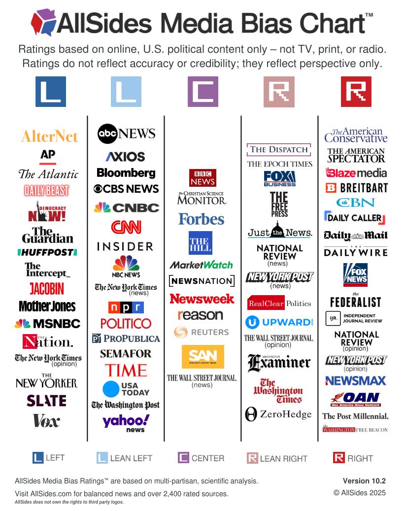
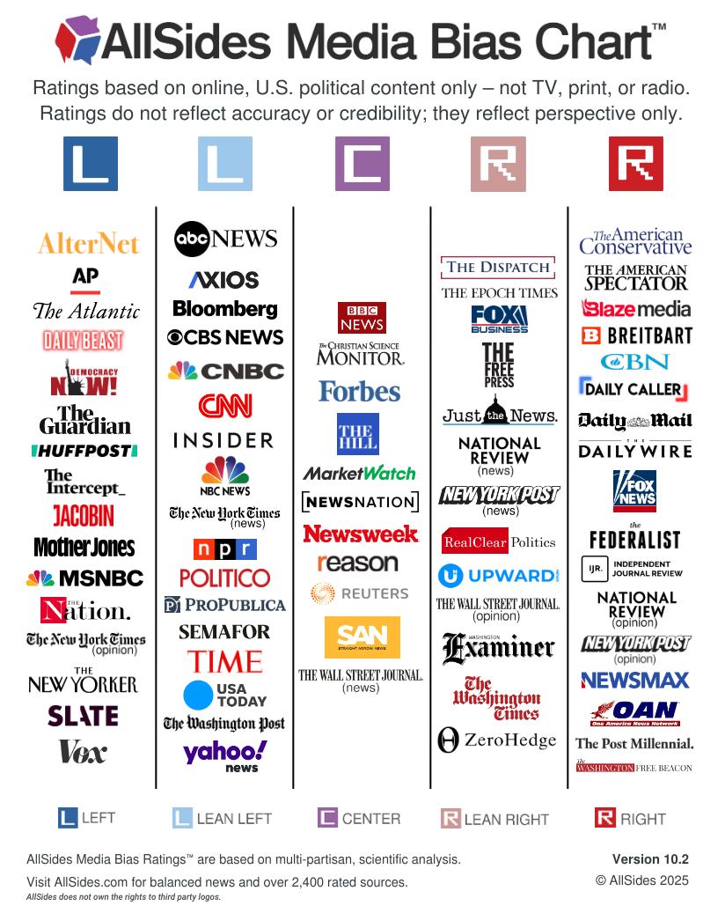

Bias Charts
AllSides chart- US Based news, rating the political leaning of various sources
Ad Fontes Media bias Chart - US Based news truthfullness and political bias. Compiled through many fact checkers and fairly unbiased.
AllSides chart- US Based news, rating the political leaning of various sources
Ad Fontes Media bias Chart - US Based news truthfullness and political bias. Compiled through many fact checkers and fairly unbiased.